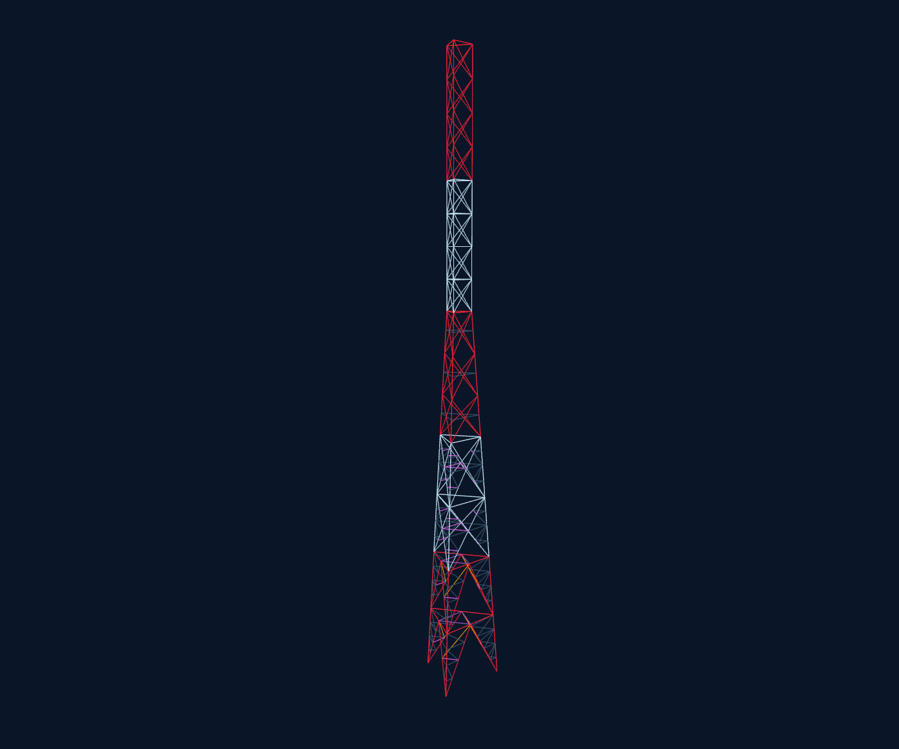
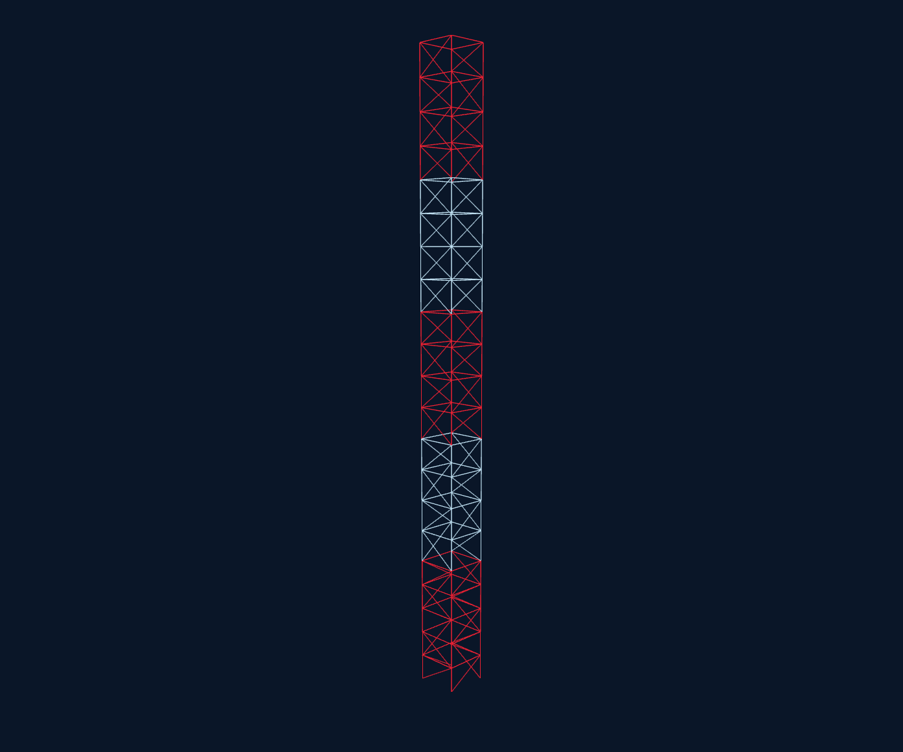
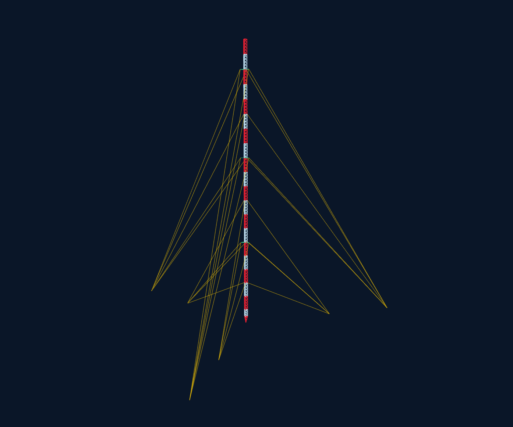
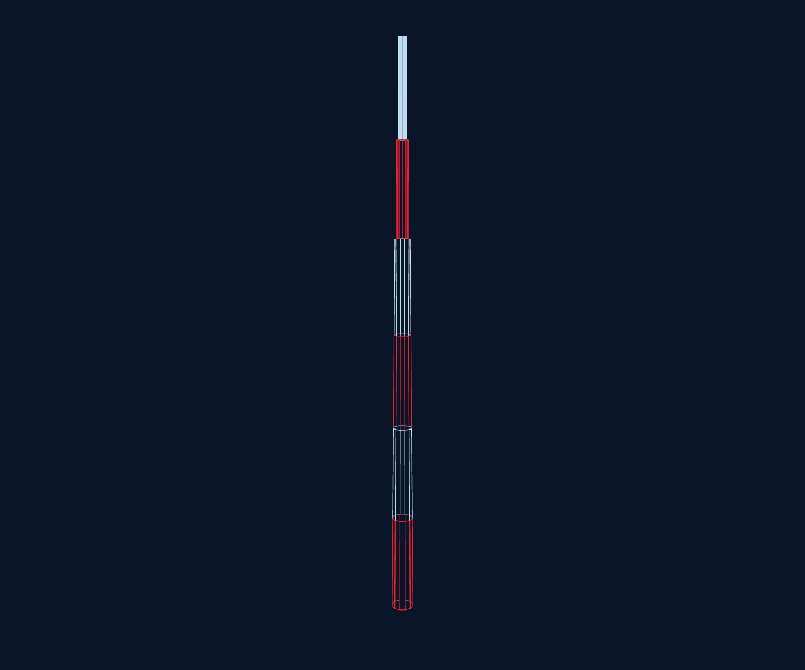
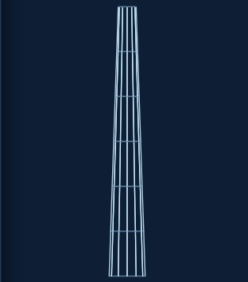
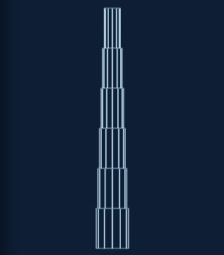
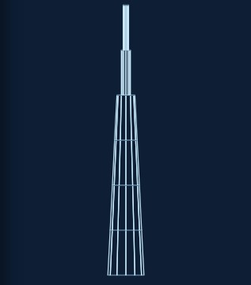

TSA — Guía de usuario
TSA (Tower Structural Analysis) es una aplicación de escritorio para modelar geométricamente torres de telecomunicación — autosoportadas, arriostradas y monopolos — visualizarlas en 3D, asignarles perfiles y calidades de acero, y exportar la geometría a STAAD.Pro.
Primeros pasos
- En la barra lateral izquierda, haz clic en el ícono Torre (o en Inicio → "Nuevo proyecto").
- Se abre el panel "Nueva Torre". Llena los datos de PROYECTO (Asset Name, Site Name, País, Ingeniero Responsable, Fecha) — son metadatos, no afectan la geometría.
- En ESTRUCTURA, elige el Tipo de estructura y completa los campos de geometría (altura, aperturas, número de tramos, etc.). Verás una vista previa en tiempo real a la derecha del panel, generada con la misma geometría real que se dibujará después.
- Haz clic en Generar Torre (o "Generar Monopolo" si elegiste ese tipo).
- El panel derecho aparece con las secciones de PROYECTO y GEOMETRÍA, editables en cualquier momento.
Ejemplos precargados
Para no empezar siempre desde cero, el menú Inicio (🏠) → EJEMPLOS trae 4 proyectos completos listos para abrir con un clic:
Estos 4 ejemplos están incluidos directamente en la app (no dependen de abrir un archivo aparte), así que funcionan igual sin conexión, en la app de escritorio o en el sitio publicado.
Tipos de estructura




| Tipo | Descripción | Apoyos en la base* |
|---|---|---|
| Autosoportada 3 piernas | Torre triangular en celosía, autoestable. | Articulado (PINNED) |
| Autosoportada 4 piernas | Torre cuadrada en celosía, autoestable. | Articulado (PINNED) |
| Arriostrada (guyed) | Mástil esbelto sostenido por niveles de retenidas (cables) ancladas al terreno. | Piernas: articulado · Anclajes: empotrado (FIXED) |
| Monopolo | Fuste tubular poligonal (3 a 24+ lados) — cónico, escalonado o combinado. | Empotrado (FIXED) |
* Las condiciones de apoyo son la regla que usará el exportador/análisis interno; hoy la geometría
ya las contempla conceptualmente, pero el bloque SUPPORTS del export STAAD todavía está
en desarrollo (ver Funciones en desarrollo).
Secciones y tramos
Toda torre se divide en secciones (o tramos, en Monopolo) apiladas verticalmente. En el panel derecho, dentro de "DETALLE POR SECCIÓN" / "DETALLE POR TRAMO", cada tarjeta resume una sección; el botón ✎ editar abre el modal completo.
Desde el modal de cada sección puedes editar (según el tipo de estructura):
- Altura del tramo y Bahías (repeticiones verticales dentro del mismo tramo).
- M — Montantes y D — Diagonales: el perfil de piernas y diagonales.
- Horizontal en TOP del tramo y Horizontal en TOP de cada bahía, con su propio Plan Bracing (patrón de arriostramiento horizontal en planta).
- Hip Bracing (solo disponible con ciertos patrones, p. ej. X-25%) — en torres autosoportadas queda como el último campo del modal, después de los horizontales de TOP/bahía.
Cada campo de perfil (M, D, horizontales, hip, etc.) es de solo lectura: haz clic sobre él para abrir el buscador de perfiles y elegir designación + calidad de acero en una sola ventana. Justo debajo de cada perfil aparece su calidad asignada (ej. "A36 — Fy 2530 kg/cm²"), todo dentro de la misma caja.
Patrones de arriostramiento
En CONFIGURACIÓN eliges el patrón de diagonales (X, X-25%, X-50%, K y variantes, Staggered) mediante íconos visuales. Algunos patrones (Staggered) permiten invertir la orientación de la diagonal; los patrones K incluyen un perfil secundario (Ds/Hs).
Monopolo
Un monopolo se define por tramos inclinados (ahusados, comparten un único cono de Diámetro Inicial → Diámetro Final) seguidos de tramos rectos (diámetro constante, capturado por el usuario). Según el Tipo de monopolo elegido en el flyout:

(todo ahusado)

(todo recto, diámetro fijo por tramo)

(ahusado arriba + recto abajo)
| Tipo | Tramos inclinados | Tramos rectos |
|---|---|---|
| Tronco-Cónico | Todos los tramos | Ninguno |
| Escalonado | Ninguno | Todos (cada uno con su diámetro) |
| Combinado | Los primeros N (definidos por el usuario) | El resto |
Por cada tramo se puede definir, desde su modal de edición:
- Forma (Redondo, 8/12/16/18 caras) — editable independientemente en cada tramo, inclinado o recto.
- Espesor de pared (mm) — se dibuja en el visor 3D como un anillo interior.
- Diámetro del tramo — fijo para tramos rectos; en tramos inclinados se calcula automáticamente a partir del ahusado general y se muestra de solo lectura.
- Calidad de acero (Fy) — tomada de la base de datos de Calidades de Acero.
Torres arriostradas (guyed)
Una torre arriostrada combina un mástil esbelto (mismo modelo de celosía que las autosoportadas) con niveles de retenidas (vientos/cables) que se anclan al terreno. Se configuran en el flyout: apertura constante del fuste, radio de anclaje inicial, número de niveles y la altura de cada uno. La opción "Torre con pivote" agrega una articulación en la base del primer tramo.
Bases de datos
Desde el ícono 🗄 Bases de datos de la barra lateral se administra toda la información de materiales y perfiles que alimenta el resto de la app. Tiene 5 pestañas: Calidades de Acero, Retenidas, Perfiles IMCA, Perfiles AISC y USER.
Calidades de acero
Tabla editable (agregar / editar / eliminar) con Nombre, Fy, Fu y E (kg/cm²). Viene precargada con:
Estas calidades alimentan todos los selectores de "Calidad" en los modales de sección y el Fy de Monopolo (ahí también es un selector de calidad, no un número capturado a mano).
Catálogo de perfiles (IMCA / AISC)
Cada catálogo (IMCA y AISC) se divide en 4 familias:
| Familia | Qué es |
|---|---|
| LI | Ángulo de lados iguales |
| LD | Ángulo de lados desiguales |
| OC | Perfiles tubulares (huecos) — incluye Diámetro y Espesor |
| OS | Redondos sólidos (macizos, sin pared) — 33 diámetros estándar |
AISC viene precargado con datos reales: 61 ángulos LI, 76 LD y 51 tubulares de la base de datos oficial AISC Shapes Database v16.0, más los 33 redondos sólidos OS calculados con fórmulas de círculo. IMCA también viene precargado: 61 LI, 15 LD y 131 OC tomados del manual IMCA, más los mismos 33 OS.
Perfiles propios (USER)
En cada fila de Perfiles IMCA/AISC hay una estrella (☆/★) para copiar ese perfil a tu lista personal USER — útil para tener a la mano los perfiles que más usas, sin buscarlos cada vez entre cientos de filas. Clic en ☆ copia (se activa ★); clic en ★ lo quita de USER. La pestaña USER también aparece como catálogo dentro del buscador de perfiles.
Cables de retenida
El catálogo de cables (diámetro, forma, peso, área, carga de ruptura, módulo elástico) vive en Bases de Datos → Retenidas, dividido en calidades HS y EHS. Alimenta el selector de diámetro de cable dentro de "Editar Retenidas" — ahí solo se elige, los datos ya no se capturan a mano.
Elegir perfil + calidad
Al hacer clic sobre cualquier campo de perfil (en el modal de sección, o el "Perfil Brazo" de Retenidas), se abre una ventana con pestañas IMCA / AISC / USER → familia (LI/LD/OC/OS), buscador por designación, y el selector de Calidad de Acero — todo en un solo paso. Al aceptar, el perfil y la calidad quedan asignados juntos. La lista muestra Área y Peso siempre en unidades métricas (cm², kg/m), sin importar si el perfil viene de un catálogo en pulgadas — para Diámetro/Espesor también.
Visor 3D
Controles disponibles en la barra de pestañas (parte superior del visor) y con el mouse:
| Control | Función |
|---|---|
| Arrastrar (clic izq.) | Orbitar la cámara |
| Rueda del mouse | Zoom |
| ⊕ / ⊖ | Zoom in / out |
| ⛶ Zoom Window | Acercar a un área rectangular |
| ↻ Orbitar | Rotación automática de la cámara |
| 🏷 Nodos | Muestra el número de cada nodo; pasa el mouse encima para ver sus coordenadas (x/y/z) |
| 𝐃 Perfiles | Mostrar/ocultar etiquetas de perfil sobre cada miembro |
| ⚙ Configuración de malla | Tamaño, divisiones, grosor y desvanecido del grid |
Inspección de miembros
Haz clic sobre cualquier pierna, diagonal u horizontal en el visor 3D para resaltarlo y abrir un panel con su tramo, categoría, perfil y calidad asignados, longitud, nodos extremos e ID del perfil. En vientos de retenida muestra la calidad del cable (HS/EHS) en vez de una calidad de acero.
Guardar / abrir proyecto
Desde el menú Inicio (🏠): "Nuevo proyecto", "Abrir proyecto…" y "Guardar como…". El archivo
guardado (.TSA) solo contiene la configuración (tipo, geometría, secciones, perfiles,
calidades) — la geometría 3D siempre se recalcula al abrir, así que un proyecto guardado antes de
una mejora del generador se ve automáticamente actualizado al volver a abrirlo.
Unidades
La barra superior tiene un selector MKS / IMP. Hoy controla la unidad de fuerza usada en el export STAAD (kg vs. kip); la conversión real de unidades de longitud en toda la interfaz (m ↔ ft) está planeada pero aún no implementada — la geometría siempre se captura y almacena en metros.
Exportar a STAAD.Pro
Desde el botón Exportar de la barra superior, "STAAD.Pro (.std)" genera un archivo de texto
con JOINT COORDINATES y MEMBER INCIDENCES listo para abrir en STAAD.Pro.
- Para torres en celosía (autosoportada/arriostrada), se exporta la geometría 3D completa (piernas, diagonales, horizontales, vientos).
- Para Monopolo, se exporta únicamente el eje central: un nodo por límite de tramo y una barra por tramo — no la malla completa del polígono, que es solo para visualización.
MEMBER PROPERTY, CONSTANTS y SUPPORTS todavía no
se incluyen en el archivo exportado — por ahora el .std contiene solo geometría pura.
Configuración
Desde el ícono ⚙ de la barra lateral:
- Color de fondo del canvas — personalizable.
- Reset a ajustes iniciales — regresa todo a los valores de fábrica del programa.
Atajos de teclado
| Atajo | Acción |
|---|---|
| Ctrl + S | Guardar proyecto |
| Ctrl + N | Nuevo proyecto |
| Ctrl + Z | Deshacer |
| Ctrl + Y | Rehacer |
| F | Ajustar vista a la torre |
| Esc | Cerrar panel de selección |
La personalización de atajos aún no está disponible.
Dar feedback
El botón 💬 Feedback de la barra superior abre una encuesta corta (tipo de torre probada, facilidad de uso, qué te gustó, qué te confundió, qué agregarías). Al dar clic en "Enviar", la respuesta se manda automáticamente — no necesitas abrir tu cliente de correo ni escribir nada aparte.
Aviso profesional
Funciones en desarrollo
Estas áreas ya tienen un punto de entrada en la interfaz pero su funcionalidad todavía está pendiente:
| Función | Estado |
|---|---|
| Pestaña "Render" (vista extruida de perfiles) | Placeholder |
| Pestañas FEM / Códigos / Cargas Viento / Antenas / Escaleras / Plataformas | Placeholder |
| Ícono de barra lateral: Análisis / Optimización | Placeholder |
| Conversión real de unidades MKS ↔ IMP | Planeado |
| Export STAAD: MEMBER PROPERTY / CONSTANTS / SUPPORTS | Planeado |
| Export DXF | Planeado |